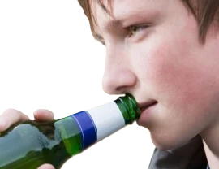

Causas:
El alcoholismo no tiene un único desencadente; es una enfermedad compleja provocada por una combinación de factores genéticos, biológicos, psicológicos y sociales.
El cosumo repetido del alcohol altera los neurotransmisores, creando una necesidad física de seguir bebiendo.
El alcohol se utiliza como mecanismo de evación para lidiar con el estres, la ansieda o la depresion. Problemas económicos, rupturas familiares o soledad.

Probables consecuencias:
Seguir este camino destruye la salud física (daño cerebral) y mental (depresión o ansiedad), destruye las relaciones personales y familiares, y causa graves problemas laborales, financieras y legales, provoca enfermedades hepáticas, hepertensión, arritmias, problemas digestivos y aumenta drásticamente el riesgo de desarrollar hasta siete tipos de cáncer, altera las vías de comunicación cerebrales, causando pérdida de memoria, disminución del volumen cerebral, demencia y un envejecimiento acelerado del sistema nervioso.
Desintoxicación supervisada: Supervisión médica para manejar de forma segura lso síntomas de abstinencia. Desintoxicación: En casos severos, se realiza bajo supervisión médica para manejar el síndrome de abstinencia de forma segura. Terapias conductuales: Ayudan a identificar las situaciones de riesgo, desarrollar habilidades para decir "no" y manejar el estrés sin recurrir a la bebida. Soporte continuo: Participar en grupos de ayuda mutua proporciona un sentido de comunidad y previene recaídas a largo plazo como alcohólicos Anónimos, o la terapia de grupo donde los seres queridos de la persona para ayudar a sanarlo.